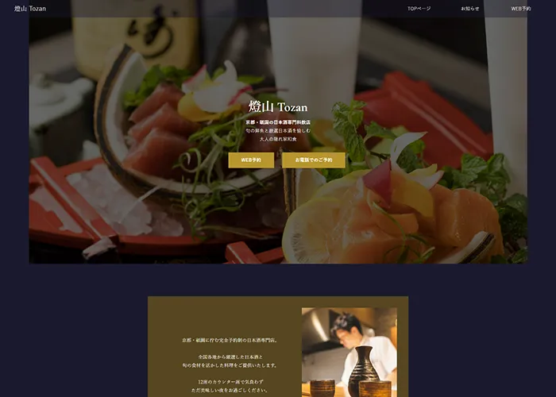
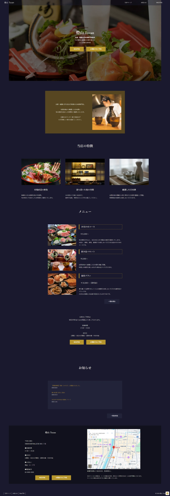
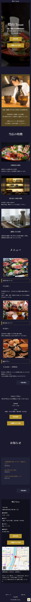
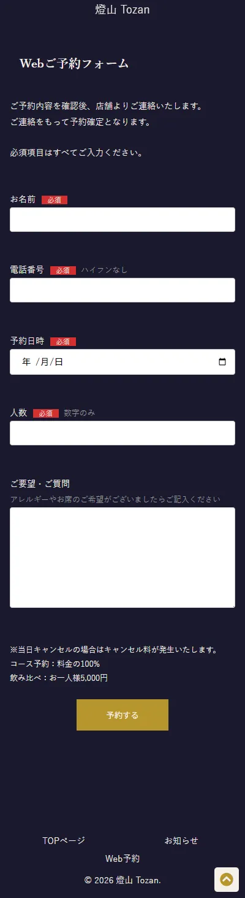
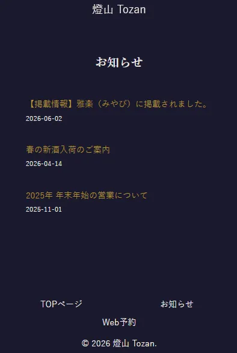

サイトを見る →
燈山 Tozan
京都・祇園の日本酒専門料飲店の集客を目的として制作したWebサイトです。来店を検討する方が必要な情報へ迷わずたどり着けることを重視しながら、店舗への信頼感やこだわりが伝わるよう設計しました。
予約につながる導線設計
予約獲得を目的としたサイトとして、利用を検討する際に必要な情報と予約導線の配置を意識しました。営業時間や定休日などの来店判断に必要な情報を予約ボタン付近にまとめることで、情報を確認した流れのまま行動へ移りやすい構成にしています。また、電話予約については電話番号を表示するだけでなく、ボタンを押すことでそのまま発信できるよう設定し、予約までの手間を減らせるよう工夫しました。
世界観の表現と信頼性
高級感のある日本酒専門料飲店を想定し、濃紺をベースに金色をアクセントとして使用しました。写真を大きく見せることで料理や店内の雰囲気が伝わりやすいようにしながら、店舗情報や地図、お知らせも掲載することで来店前の不安を減らし、安心して予約できるよう配慮しています。また、店主からのメッセージを掲載するセクションを設けることで、店舗のこだわりや人柄が伝わるよう工夫し、より親しみや信頼感を持ってもらえるよう配慮しました。




More Works
小さな修正依頼でも、お気軽にご連絡ください。